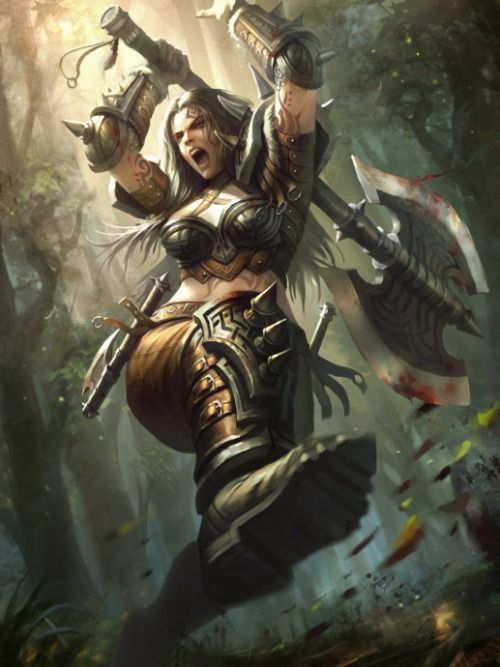
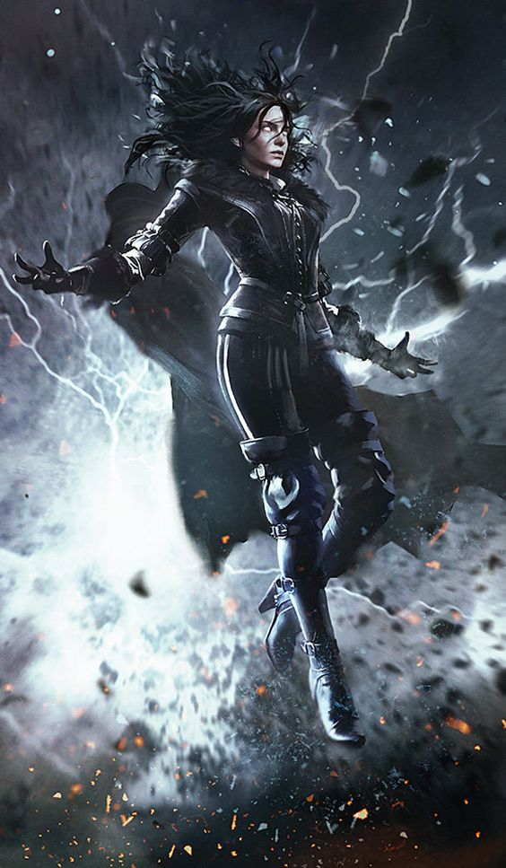
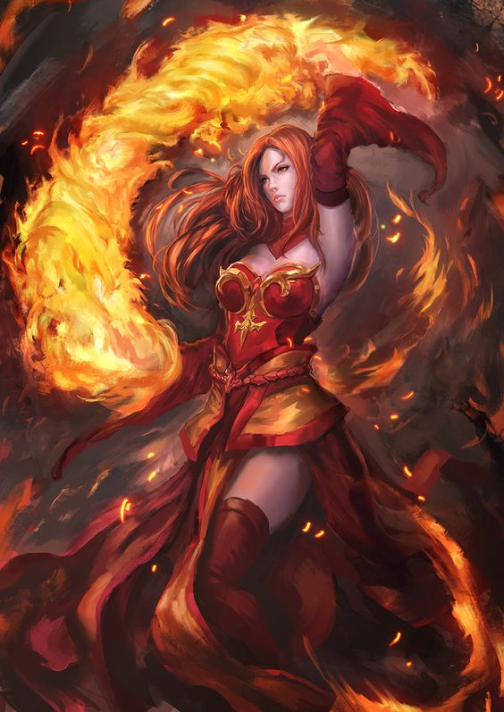
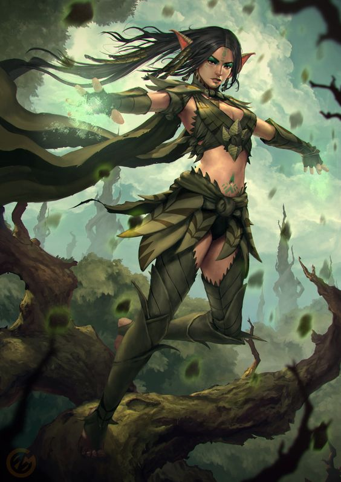
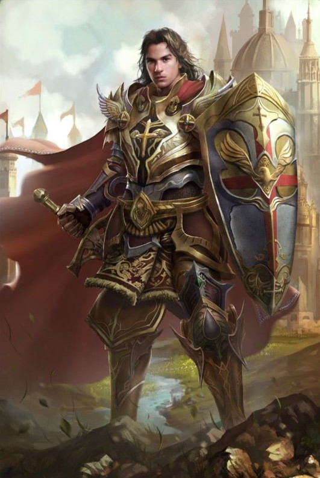
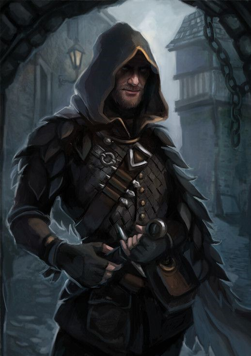

Guerreiros são peritos em utilizar armas de duas mãos, seja espadas, armas duplas, katanas ou marretas.

Magos são pesquisadores das artes arcanas. Costumam utilizar seu conhecimento em batalha no lugar das armas convencionais, mas não são restringidos na utilização dos mesmos. Selvagem e enigmático, variado nas formas e funções.

Os bruxos são desbravadores do conhecimento que existe escondido no tecido do multiverso. Através de pactos feitos com seres misteriosos detentores de poder sobrenatural, os bruxos são capazes de atos mágicos tão sutis quanto espetaculares como a necromancia.

Pronto para defender a natureza em todas as suas formas, o Druida é um mestre das forças selvagens e dos mistérios da vida. Capaz de empunhar armas simples e vestir armaduras leves ou médias, ele prefere manter-se em harmonia com o ambiente ao seu redor. Geralmente assume o papel de curandeiro e guardião dos elementos, utilizando a magia natural para restaurar aliados, invocar criaturas e controlar o campo de batalha com o poder da própria terra.

Pronto para o combate, assim como um guerreiro, o Paladino sabe usar todos os tipos de armaduras e escudos. sendo preferencial o uso de armaduras pesadas de placas. Geralmente assumindo o papel de protetor capaz de aguentar vários golpes, o uso de escudos é frequente nesta classe.

O assassino é um especialista em venenos, disfarces e camuflagem. Usam essas técnicas com um único fim: aproximar-se de seu alvo e matá-lo. Alguns assassinos mais honrados oferecem às suas vítimas uma chance de lutar, travando longos duelos; outros preferem eliminar seus alvos de uma forma rápida e limpa.